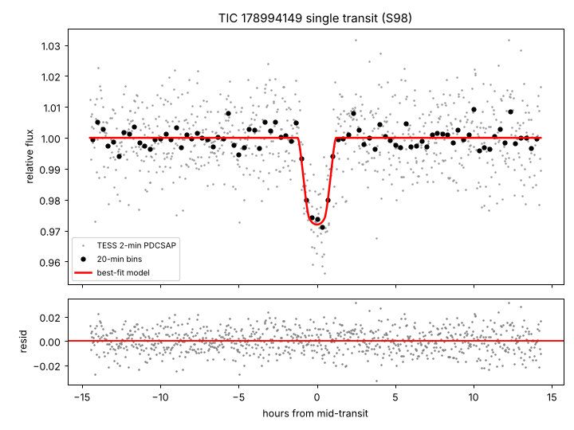
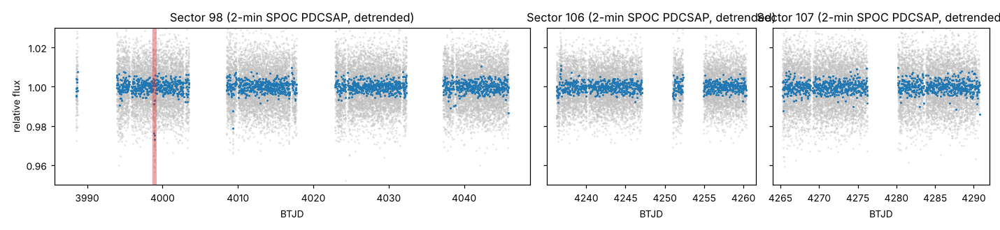
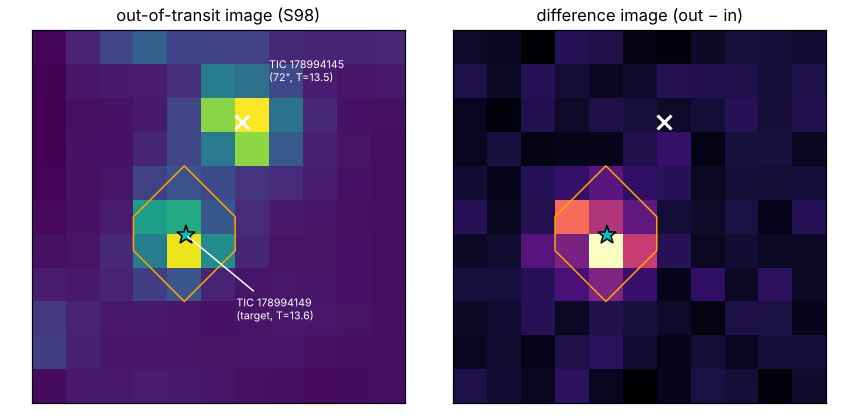
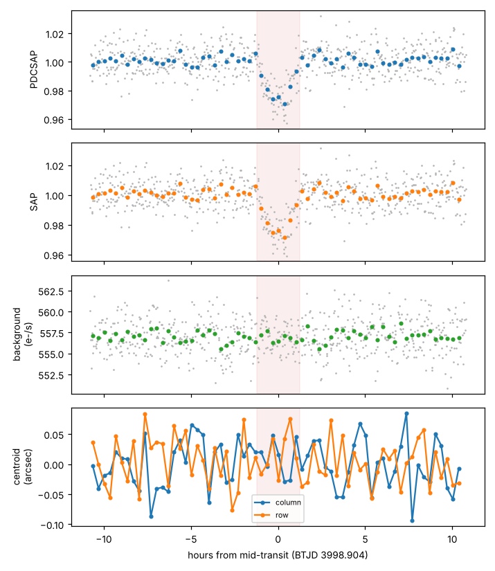
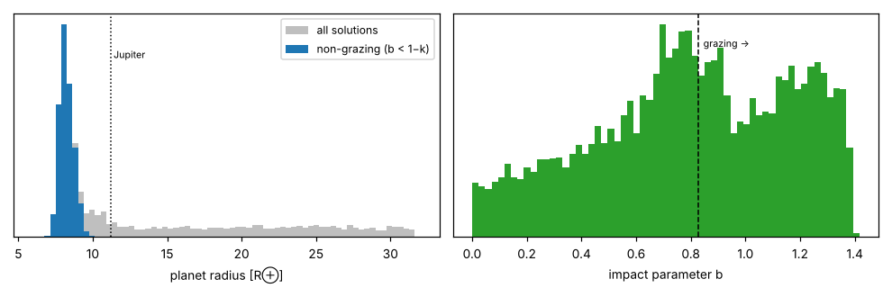
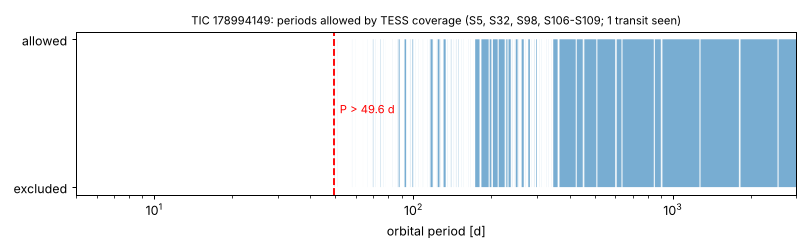

A Saturn-sized object passed in front of a nearby M dwarf on 19 November 2025. The 2.6% dip sits in public TESS data, yet the star appears in no planet, candidate, or pipeline-detection catalog.


Most transit-like dips in TESS data turn out to be eclipsing binaries on neighbouring stars, scattered light, or momentum-dump glitches. Of about 50 candidates inspected in detail, every other one failed at least one of these tests or could not be pinned to a single star. This one passes all of them.
| Test | Result | |
|---|---|---|
| Catalog novelty | Absent from the TOI list (8,175), CTOI list (5,139), NASA Exoplanet Archive (6,473 planets), every SPOC TCE list for Sectors 1–108 (342,199 TCEs), and the literature | pass |
| Seen in raw and corrected flux | Same dip in SAP and PDCSAP; quality flags clear for the whole event | pass |
| Background event | Background flux change during transit is 2% of the dip (scattered-light or asteroid events give ≈100%) | pass |
| Centroid motion | Flux-weighted centroid shift 0.7σ, consistent with zero | pass |
| Pixel-level location | Difference image peaks on the target (4.7″, within systematics); only other Gaia source within 40″ is G = 20.8 at 18.6″, which would need a 600% eclipse | pass |
| Common-mode systematic | No other star within 7° on the sky shows an event within ±0.1 d (0 found, ≈3 expected by chance) | pass |
| Independent photometry | Recovered in my own FFI cutout photometry (SNR 17, depth 2.3%) | pass |
| Astrometric binarity | Gaia DR3 RUWE 1.12, no multi-peak flag, non_single_star = 0 | pass |
| Contamination | TIC contamination ratio 0.0004 | pass |




A 2.5-hour transit is short for a planet on an orbit of 50 days or more around this star. A central transit on a circular 100-day orbit would last about 6 hours. Two geometries explain this. Either the orbit is eccentric (e ≳ 0.5, transit near periastron), which is common among long-period giant planets, or the transit is grazing. At periods above 50 days the object receives at most 0.6 times Earth's insolation, placing it at or beyond the outer edge of the star's habitable zone.
| Property | Value | Source |
|---|---|---|
| Spectral type (photometric) | ≈ M3.5 V | Gaia BP−RP = 2.71 |
| Effective temperature | 3320 ± 157 K (3439 K) | TIC v8.2 (Gaia GSP-Phot) |
| Radius / mass | 0.482 ± 0.014 R☉ / 0.48 M☉ | TIC v8.2 |
| Distance | 116.1 ± 0.3 pc | Gaia DR3 parallax 8.614 ± 0.020 mas |
| Magnitudes | T 13.58 · G 14.83 · V 16.17 · J 11.95 · K 11.07 | TIC, Gaia, 2MASS |
| Radial velocity | 17.5 ± 5.5 km/s | Gaia DR3 |
| Proper motion | +14.3, −2.8 mas/yr | Gaia |
This is a planet candidate, not a confirmed planet. Three things stand between it and confirmation.
I streamed every 2-minute SPOC light curve from TESS Sectors 97–108 (153,730 light curves of 84,380 stars, the 2025–2026 data) from the MAST public archive, detrended each one, and ran a box-matched single-event search at durations from 1 to 13 hours. SPOC's single-sector search needs two transits inside one sector, and its latest multi-sector run stops at Sector 96, so long-period planets in these sectors fall through. A multi-sector box-least-squares search for 8–120 day periods over 11,496 stars with two or more recent sectors ran alongside; of 180 periodic signals it returned, 24 survived a flat-baseline shape test, and none of those turned out to be a planet-sized transit on the target star. Every candidate then went through catalog cross-matching against TOIs, CTOIs, confirmed planets and all SPOC TCE ephemerides, then the background, centroid, difference-image and systematics tests above.
| Star | Signal | Verdict |
|---|---|---|
| TIC 220389092 | 4.2% eclipses, P = 25.2844 d, 5 events in Sectors 68–105. SPOC attributed them to the neighbour TIC 403191781 with wrong periods (11.97 d, 733 d). | eclipsing binary |
| TIC 178153666 | Equal-depth (0.85%) V-shaped eclipses at phases 0 and 0.572, P = 21.383 d; no SPOC detection | eccentric grazing binary |
| TIC 146320922 | 2.5 ppt dips every 15.786 d in the light of TIC 146320921 (5 transits, S106–S108); difference images put them on this background star, where the eclipse is ≳4% deep | background binary |
| TIC 79531206 / 79531205 | Two matching 0.2% dips 2,830 d apart in the light of TIC 79531204; difference images place them on the faint neighbour pair | off-target, unresolved |
Values for follow-up teams and for an eventual ExoFOP listing. Since July 2025 ExoFOP accepts community candidates only after they appear in a refereed paper, and the TESS TOI team needs a period before it will consider a community candidate.
TIC ID 178994149
Epoch (BJD_TDB) 2460998.9041 ± 0.0020
Period unknown (single transit; P > 49.6 d)
Depth 26500 ± 2000 ppm
Duration 2.5 ± 0.3 h
Rp/R* 0.156 (+0.010 / −0.008) [non-grazing]
Planet radius 8.2 (+0.5 / −0.4) R_Earth
Impact parameter 0.81 (+0.39 / −0.41); grazing not excluded
Data TESS S98 2-min SPOC (camera 2, CCD 1)
Notes on-target per difference image; no BKG or centroid
signal; host overluminous for colour (young or binary)